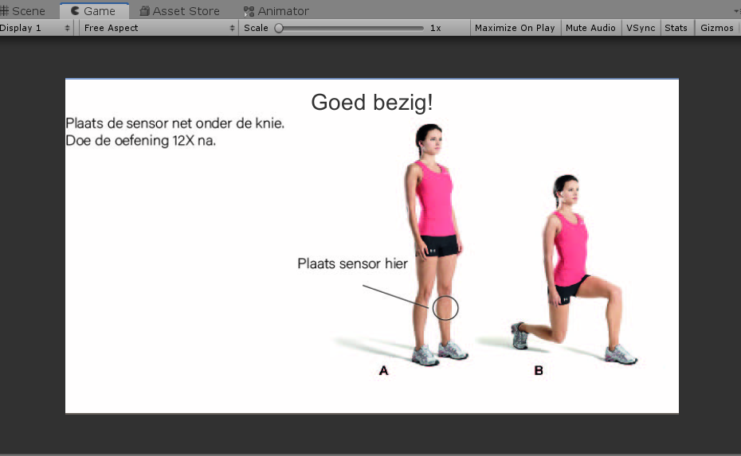

In the first half of 2020 I followed a course about emerging technologies, during this course I had the chance to work with IOT, AI and VR.
My final assignment was to make a product using a emerging technology. My idea was to make a product that would assist during a home workout.
For this project I used the Unity engine and the joy-cons from the Nintendo switch.
For the prototype I used the lunge exercise, in unity I connected two cubes to each other and used joints to calculate the force that where between them. Based on the force between the cubes the software could tell if your knee was sticking out.